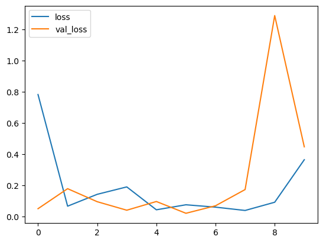
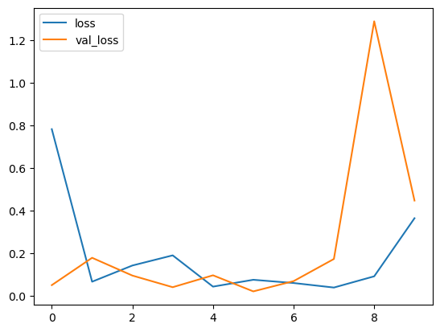
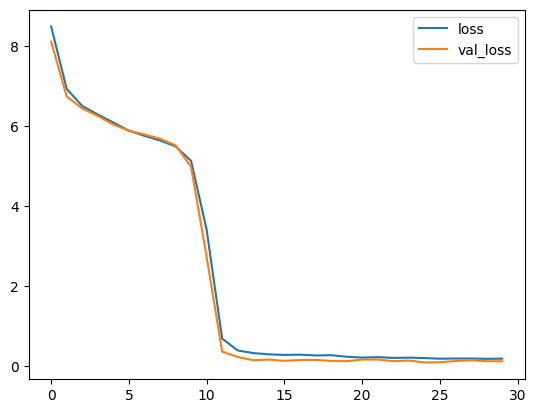
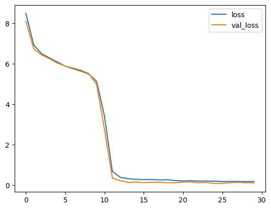
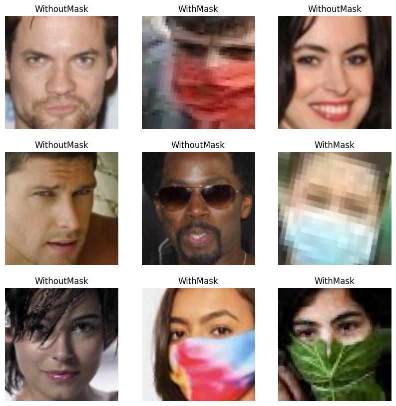

Embedded System Project: Face Mask Detection
Problem Statement
The problem of face mask detection in embedded systems involves detecting whether a person is wearing a mask or not, in real-time, with the help of cameras placed at various locations. The goal is to ensure that people follow safety protocols during pandemics like COVID-19 and prevent the spread of the disease.
Possible Solutions with Deep Learning
To come up with the possible solutions which can be implemented with Deep Learning, we present the most significant factors:
- Transfer Learning: The approach is to use transfer learning, which involves using the pre-trained model such as ResNet and fine-tuning it for our specific task. In this approach, the pre-trained model is used as a starting point, and the final layers are replaced with new layers to fit the new problem. Transfer learning can help in reducing the time and computational cost of training a model from scratch.
- Data Augmentation: Another key approach is to use data augmentation techniques to generate more training data from existing images. This can help in improving the accuracy of the model by providing more varied and diverse data to train on.
- Real-time Detection: Real-time detection is another important aspect of face mask detection in embedded systems. This requires optimizing the model for fast and efficient inference on embedded devices.
Deep Learning for Face Mask Detection
Deep learning as the state-of-the-art models are used for face mask detection due to its ability to automatically learn features from the raw data and identify complex patterns in the images. This allows deep learning models to effectively distinguish between images of people with and without masks, even when faced with variations in lighting, facial expressions, and other factors that can make the task challenging. Additionally, deep learning models can be fine-tuned on large datasets, making them highly adaptable to different scenarios and allowing for high accuracy in face mask detection.
We proceed with hyperparameter tuning for the deep learning architectures and utilize the pre-trained models and implement our own custom layer architecture to optimize the model for face mask detection.
Choices for Hyperparameter Tuning
The following hyperparameters will be used for the neural network implementations:
- optimizer: Adam (uses adaptive learning rates for each parameter, converges quickly to a good solution and handles sparse gradients effectively)
- activation: ReLU (introduces non-linearity to the network, allowing it to learn more complex features and patterns in the data)
- layers: 10 Dense layers and 9 Dropout layers
- Dense Layers: provide more non-linear mappings of the input data, helping the network learn more complex relationships between input and output
- Dropout Layers: prevent overfitting by reducing the number of parameters
- loss: SparseCategoricalCrossentropy (suitable for multi-class classification problems with integer labels)
- dropout rate: 0.2 (randomly drops out 20% of the neurons in the layer during training, helping prevent overfitting)
- learning rate: 0.00001 (kept low to avoid overshooting the model's optimal weights)
- patience: 10 (number of epochs to wait before stopping training if the validation loss has not improved)
The final Dense layer has a softmax activation function and output dimensionality equal to the number of classes (2 in this case: with_mask and without_mask)
These hyperparameters were selected based on best practices and experimentation to achieve good performance on the face mask detection task.
Model Implementations
ResNet-18 Implementation
The ResNet-18 model is a deep neural network architecture designed for image classification tasks. It uses a ResNet18 base model pre-trained on ImageNet, which has shown to be effective in image classification tasks. The ResNet18 model is used to extract features from the input image.
The model is trained using the Adam optimizer and the Sparse Categorical Crossentropy loss function. The model's performance is evaluated using Sparse Categorical Accuracy metrics.
ResNet-18 + CNN(Dense Layers) Implementation (our improved architecture)
Using ResNet18 base as a backbone of detector architecture, several fully connected layers are added to learn a mapping from the extracted features to the classes. The fully connected layers consist of multiple hidden layers, each followed by a dropout layer to prevent overfitting. The final layer is a softmax layer that outputs the probability distribution over the classes.
This architecture is designed to improve accuracy in face mask detection or generally in classification over base ResNet-18.
ResNet-50 + CNN(Dense Layers) Implementation (our improved architecture)

This neural network design uses transfer learning with ResNet50 as the base model and applies CNN headers on top of it for face mask detection. The model has the following specifications:
- The base model is configured to exclude the top layer and use global average pooling to reduce the number of parameters in the model
- The addition of multiple Dense layers with dropout helps to fine-tune the model for the specific task of face mask detection
- Early stopping technique helps prevent overfitting
The actual accuracy of the model will depend on various factors such as the quality and quantity of the training data, hyperparameter tuning, and the specific implementation details.
Evaluation of Detection Models
Train and Validation Loss Based on Models
 


ResNet-18 | Detector over ResNet-18 | Detector over ResNet-50
Based on the evaluation of the train and validation loss:
- ResNet18 performs worse compared to the other two models, due to its simpler architecture.
- ResNet18 with CNN performs better than the ResNet model in terms of loss, which could be attributed to the added CNN headers.
- ResNet50 with CNN performs the best in terms of loss, which is not surprising as ResNet50 is a deeper and more complex architecture.
Based on number of Parameters or layers
 

1 Dropout layer removed | All dropout layers are kept | All dropout layers removed
- Removing a single dropout layer to increase the number of parameters, we can see that the validation curve is slightly above than train curve
- The current parameters with no additional dropout layers and hence avoid overfitting. Therefore it outputs a good validation curve which is closer to train curve
- By removing all dropout layers our the model is able to get more complex features since the number of parameters reached to millions and therefore the loss reaches zero in less epochs
The removal of all dropout layers from the model may result in overfitting and requires a lot more time. The accuracy and losses presented may depend on data distribution, thus we proceed with keeping all the dropout layers to obtain the best results.
Accuracy
To evaluate the models' performance, sparse categorical accuracy, confusion matrix, and classification table could be used.


Detector with ResNet-18 backbone | Detector with ResNet-50 backbone
ResNet-18 + CNN (our best model)


Confusion Matrix | Classification Table
Sparse categorical accuracy measures the proportion of correctly predicted class labels out of all predictions, and it is a common metric for multi-class classification tasks like face mask detection. A confusion matrix shows the number of correct and incorrect predictions for each class, and it could provide insights into the models' strengths and weaknesses in classifying different classes.
Based on the above discussion, ResNet18 with CNN could potentially outperform ResNet18 and ResNet50 due to its enhanced representation power, while ResNet50 might suffer from overfitting and longer training time.
Results
|
Predicted Results of Detector based on CNN architecture build with a backbone over ResNet18 The face mask detection model designed using ResNet18 with CNN architecture was able to successfully predict whether a person is wearing a mask or not. The model achieved high accuracy on both training and validation sets, with the best performance obtained using ResNet18 with CNN architecture, which outperformed ResNet18 and ResNet50 with CNN architectures in terms of loss and sparse categorical accuracy. |
 |
Mobile Application
A Flutter UI was developed to integrate the trained model with a mobile application, providing an easy-to-use interface for the end-users. The successful implementation of the face mask detection model using deep learning and the integration with a mobile application signifies the robustness and lightweight nature of the developed model.

Screenshots illustrating the functionality and user interface of the face mask detection application.